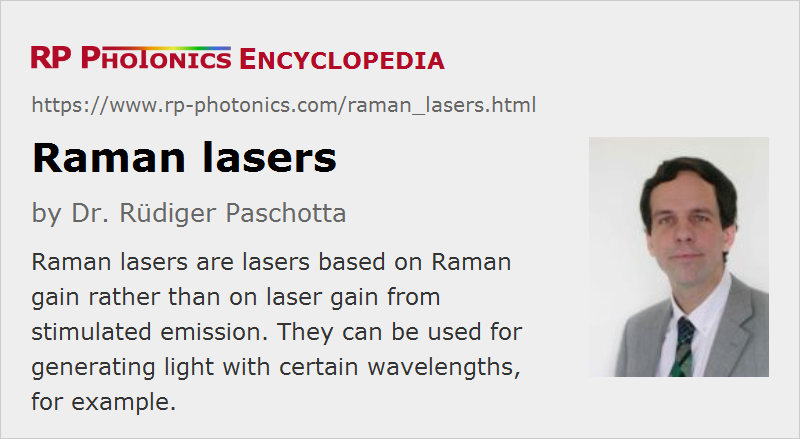

Raman Lasers
Definition: lasers based on Raman gain rather than on laser gain from stimulated emission
German: Raman-Laser
Categories: nonlinear optics, lasers
How to cite the article; suggest additional literature
Author: Dr. Rüdiger Paschotta
A Raman laser is a light source similar to an ordinary laser, but with an amplifier medium based on Raman gain (stimulated Raman scattering) rather than on stimulated emission from excited atoms or ions. The main attraction of this type of device is that essentially any Raman laser wavelength can be achieved with a suitable choice of the pump wavelength, provided that both wavelengths are within the transparency region of the material and a sufficiently high nonlinearity and/or optical intensity are reached.
The term Raman lasers is sometimes also used for lasers which are suitable for Raman spectroscopy, but this is not the topic of this article.
Different Types of Raman Lasers
The Raman-active medium is usually either an optical fiber or a bulk crystal, but sometimes also a gas. The long interaction length in fibers makes it easy to exceed the threshold, particularly if a low-loss laser resonator is built. Continuous-wave operation is then possible with pump and output powers typically of the order of hundreds of milliwatts to several watts. Within the spectral range of the Raman gain, the Raman laser wavelength can be selected with a fiber Bragg grating, which also leads to a small emission bandwidth, although single-frequency operation is difficult to achieve due to the nonlinear interaction.
Cascaded Raman fiber lasers can be built with nested pairs of fiber Bragg gratings. Oscillation on one Raman order is used for pumping another order, so that larger frequency offsets can be bridged. This technique can be used e.g. to make a 1480-nm pump source for erbium-doped fiber amplifiers, which itself is pumped with a 1064-nm solid-state bulk laser.
Raman lasing is also sometimes used in solid-state bulk lasers. Here, the Raman-active medium can be a crystal (e.g. made of barium nitrate, potassium gadolinium tungstate = KGW or synthetic diamond) placed in a separate cavity, or it can be an additional Raman crystal within the laser resonator (intracavity Raman conversion). Sometimes, even the laser crystal itself can be used (self-Raman conversion), e.g. in an ytterbium-doped tungstate or vanadate crystal as the Raman-active medium. Due to the short interaction length (compared with fibers) of only a few centimeters, the Raman threshold is high and can typically only be exceeded in Q-switched operation, with pulse durations in the nanosecond range. However, continuous-wave operation is possible with optimized low-loss resonators [11]. It is even possible to do further nonlinear frequency conversion, e.g. with an intracavity frequency doubler [20]. The optimization of such devices for high output power is not easy, however, particularly due to strong thermal lensing in the laser crystal and the Raman crystal. Also, there can be nontrivial demands on the dielectric mirror coatings, which have to fulfill specifications at three or more wavelengths.
Raman fiber lasers are often pumped with rare-earth-doped fiber lasers. However, direct diode pumping is also possible since sufficiently high-brightness laser diodes have become available [29].
Raman lasers based on waveguides in silicon (not silica) on a chip (silicon lasers) have been demonstrated [9]. Such a silicon Raman laser is possible despite the short interaction length, because silicon has a very high Raman gain coefficient, and the waveguides used have a very strong mode confinement. A detrimental effect can be two-photon absorption. Note that a silicon Raman laser still requires an external pump laser (which is difficult to realize with silicon), but makes it possible to reach longer wavelengths than otherwise possible with silicon. Continuous-wave Raman lasers have also been demonstrated with toroidal microcavities based on silica [10].
Gases can also be used as Raman gain media. Raman gas lasers usually have a high threshold pump power, but it is possible to achieve a low threshold power by using a high-finesse laser resonator [4]. Low-threshold devices have also been made with photonic crystal fibers, where the small holes are filled with a gas [22].
As Raman amplification works only at high intensities, other nonlinearities such as the Kerr effect or four-wave mixing are also unavoidably strong in such devices. This can make it difficult to obtain, e.g., narrow-linewidth operation of a Raman laser.
Applications
Examples of applications of Raman lasers are:
- A fiber Raman laser, or possibly a cascade of Raman fiber lasers, can be used for pumping an erbium-doped fiber amplifier.
- A 589-nm Raman laser can be used for a laser guide star in the form of a sodium beacon for atmospheric correction in an astronomical observatory.
- Raman lasers may be useful as part of RGB sources for digital projection displays.
Suppliers
The RP Photonics Buyer's Guide contains 6 suppliers for Raman lasers. Among them:
Questions and Comments from Users
Here you can submit questions and comments. As far as they get accepted by the author, they will appear above this paragraph together with the author’s answer. The author will decide on acceptance based on certain criteria. Essentially, the issue must be of sufficiently broad interest.
Please do not enter personal data here; we would otherwise delete it soon. (See also our privacy declaration.) If you wish to receive personal feedback or consultancy from the author, please contact him e.g. via e-mail.
By submitting the information, you give your consent to the potential publication of your inputs on our website according to our rules. (If you later retract your consent, we will delete those inputs.) As your inputs are first reviewed by the author, they may be published with some delay.
Bibliography
| [1] | R. H. Stolen et al., “Raman oscillation in glass optical waveguide”, Appl. Phys. Lett. 20, 62 (1972), doi:10.1063/1.1654046 |
| [2] | E. O. Ammann and C. D. Decker, “0.9-W Raman oscillator”, J. Appl. Phys. 48 (5), 1973 (1977), doi:10.1063/1.323904 |
| [3] | H. A. Haus and M. Nakazawa, “Theory of the fiber Raman soliton laser”, J. Opt. Soc. Am. B 4 (5), 652 (1987), doi:10.1364/JOSAB.4.000652 |
| [4] | J. K. Brasseur et al., “Continuous-wave Raman laser in H2”, Opt. Lett. 23 (5), 367 (1998), doi:10.1364/OL.23.000367 |
| [5] | N. S. Kim et al., “1239/1484 nm cascaded phosphosilicate Raman fiber laser with CW output power of 1.36 W at 1484 nm pumped by CW Yb-doped double-clad fiber laser at 1064 nm and spectral continuum generation”, Opt. Commun. 176 (1-3), 219 (2000), doi:10.1016/S0030-4018(00)00525-3 |
| [6] | H. M. Pask, “The design and operation of solid-state Raman lasers”, Prog. Quantum Electron. 27 (1), 3 (2003), doi:10.1016/S0079-6727(02)00017-4 |
| [7] | H. M. Pask et al., “High average power, all-solid-state, external resonator Raman laser”, Opt. Lett. 28 (6), 435 (2003), doi:10.1364/OL.28.000435 |
| [8] | P. Cerny et al., “Solid state lasers with Raman frequency conversion”, Prog. Quantum Electron. 28 (2), 113 (2004), doi:10.1016/j.pquantelec.2003.09.003 |
| [9] | O. Boyraz and B. Jalali, “Demonstration of a silicon Raman laser”, Opt. Express 12 (21), 5269 (2004), doi:10.1364/OPEX.12.005269 |
| [10] | T. J. Kippenberg et al., “Ultralow-threshold microcavity Raman laser on a microelectronic chip”, Opt. Lett. 29 (11), 1224 (2004), doi:10.1364/OL.29.001224 |
| [11] | A. S. Grabitchov et al., “Multimode pumped continuous-wave solid-state Raman laser”, Opt. Lett. 29 (21), 2524 (2004), doi:10.1364/OL.29.002524 (first continuous-wave solid-state bulk Raman laser) |
| [12] | R. P. Mildren et al., “Efficient, all-solid-state, Raman laser in the yellow, orange and red”, Opt. Express 12 (5), 785 (2004), doi:10.1364/OPEX.12.000785 |
| [13] | H. Rong et al., “A continuous-wave Raman silicon laser”, Nature 433, 725 (2005), doi:10.1038/nature03346 |
| [14] | R. P. Mildren et al., “Discretely tunable, all-solid-state laser in the green, yellow and red”, Opt. Lett. 30 (12), 1500 (2005), doi:10.1364/OL.30.001500 |
| [15] | H. M. Pask, “Continuous-wave, all-solid-state, intracavity Raman laser”, Opt. Lett. 30 (18), 2454 (2005), doi:10.1364/OL.30.002454 |
| [16] | B. Jalali et al., “Raman-based silicon photonics”, J. Sel. Top. Quantum Electron. (3), 412 (2006), doi:10.1109/JSTQE.2006.872708 (review paper, containing many useful references) |
| [17] | C. A. Codemard et al., “High-power continuous-wave cladding-pumped Raman fiber laser”, Opt. Lett. 31 (15), 2290 (2006), doi:10.1364/OL.31.002290 |
| [18] | Z. Luo et al., “Stable and spacing-adjustable multiwavelength Raman fiber laser based on mixed- cascaded phosphosilicate fiber Raman linear cavity”, Opt. Lett. 33 (14), 1602 (2008), doi:10.1364/OL.33.001602 |
| [19] | H. Rong et al., “Low-threshold continuous-wave Raman silicon laser”, Nature Photon. 1 (4), 232 (2007), doi:10.1038/nphoton.2007.29 |
| [20] | P. Dekker et al., “All-solid-state 704 mW continuous-wave yellow source based on intracavity, frequency-doubled crystalline Raman laser”, Opt. Lett. 32 (9), 1114 (2007), doi:10.1364/OL.32.001114 |
| [21] | J. A. Piper and H. M. Pask, “Crystalline Raman Lasers”, J. Sel. Top. Quantum Electron. 13 (3), 692 (2007), doi:10.1109/JSTQE.2007.897175 |
| [22] | F. Couny et al., “Subwatt threshold cw Raman fiber-gas laser based on H2-filled hollow-core photonic crystal fiber”, Phys. Rev. Lett. 99 (14), 143903 (2007), doi:10.1103/PhysRevLett.99.143903 |
| [23] | H. Rong et al., “A cascaded silicon Raman laser”, Nature Photon. 2, 170 (2008), doi:10.1038/nphoton.2008.4 |
| [24] | A. J. Lee et al., “A wavelength-versatile, continuous-wave, self-Raman solid-state laser operating in the visible”, Opt. Express 18 (19), 20013 (2010), doi:10.1364/OE.18.020013 |
| [25] | A. Sabella et al., “1240 nm diamond Raman laser operating near the quantum limit”, Opt. Lett. 35 (23), 3874 (2010), doi:10.1364/OL.35.003874 |
| [26] | J. M. Feve et al., “High average power diamond Raman laser”, Opt. Express 19 (2), 913 (2011), doi:10.1364/OE.19.000913 |
| [27] | R. P. Mildren, “Side-pumped crystalline Raman laser”, Opt. Lett. 36 (2), 235 (2011), doi:10.1364/OL.36.000235 |
| [28] | O. Kitzler et al., “Continuous-wave wavelength conversion for high-power applications using an external cavity diamond Raman laser”, Opt. Lett. 37 (14), 2790 (2012), doi:10.1364/OL.37.002790 |
| [29] | S. I. Kablukov et al., “An LD-pumped Raman fiber laser operating below 1 μm”, Laser Phys. Lett. 10, 085103 (2013), doi:10.1088/1612-2011/10/8/085103 |
| [30] | T. Yao and J. Nilsson, “835 nm fiber Raman laser pulse pumped by a multimode laser diode at 806 nm”, J. Opt. Soc. Am. B 31 (4), 882 (2014), doi:10.1364/JOSAB.31.000882 |
| [31] | Q. Xiao et al., “Bidirectional pumped high power Raman fiber laser”, Opt. Express 24 (6), 6758 (2016), doi:10.1364/OE.24.006758 |
| [32] | J. Lin and D. J. Spence, “25.5 fs dissipative soliton diamond Raman laser”, Opt. Lett. 41 (8), 1861 (2016), doi:10.1364/OL.41.001861 |
| [33] | Y. C. Liu et al., “Compact efficient high-power triple-color Nd:YVO4 yellow-lime-green self-Raman lasers”, Opt. Lett. 45 (5), 1144 (2020), doi:10.1364/OL.388266 |
See also: Raman amplifiers, Raman scattering, laser guide stars, The Photonics Spotlight 2012-03-12
and other articles in the categories nonlinear optics, lasers
|  |
If you like this page, please share the link with your friends and colleagues, e.g. via social media:
These sharing buttons are implemented in a privacy-friendly way!